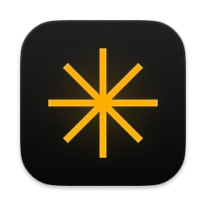
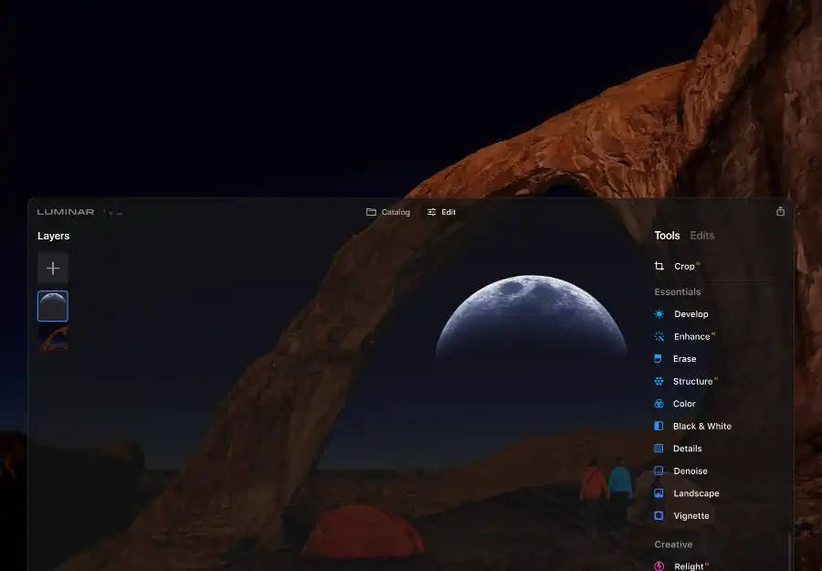

请访问原文链接：Luminar Neo 1.26.0 (macOS, Windows) - 创新 AI 图像编辑器 查看最新版。原创作品，转载请保留出处。
作者主页：sysin.org
提升您的照片编辑能力。

你想象中的照片
Luminar Neo 让您能够表达所见之美

什么是 Luminar Neo？
您是否曾经想通过图像获得更多成就？Luminar Neo 是一款创新的图像编辑器，由未来的 AI 技术提供支持，可简化复杂的编辑程序并使创作者能够将他们最大胆的想法变为现实。并享受它。
使用我们全新的核心引擎和图层工作流程，在您的编辑中获得速度和灵活性。
我们为 Luminar Neo 构建的新引擎基于我们结合和进化的经验中的所有最佳解决方案，以实现最佳性能和创造力，并为实现复杂的创造性结果而开发。
调整照片中的光线，以创造性地控制场景中的光线 (sysin)。您可以根据与镜头的距离来控制图像的曝光，以独立调整背景和前景的曝光。
自动去除因镜头和传感器上的灰尘和污垢而导致的图像上的斑点。
从城市景观的天空中清理不需要的电源线。
通过在一个镜头中轻松组合两个或多个图像，尝试无限的创意可能性。
…以及更多。
Luminar Neo 中的新技术和创新的用户体验让创意图像编辑变得简单而有趣。
Luminar Neo 于 2022 年 2 月问世，您可以立即预订并投资于您的摄影成功。
AI 特性
文字难以描述，详见官网 > https://skylum.com/luminar。
天空 AI
如果您的照片中的天空由于恶劣的天气和曝光不足而无法引人注目，您可以使用 Sky AI 工具轻松替换它。它扫描图像以识别天空和水，然后用选定的替换天空无缝改变天空，在水中添加逼真的反射，并智能地重新照亮场景。
人像散景
人像散景 AI 工具模仿主题背景上的奶油散景模糊。无论使用的镜头或照明条件如何，它几乎适用于任何肖像图像。精确控制景深、柔和度和发光。
重新点燃 AI
使用 Relight AI 功能重新点亮幻灯片中的背光照片或变暗图像。Luminar Neo 计算照片的深度并创建其 3D 地图。这样就可以在 2D 图像上的 3D 空间中自然地传播光。
构图 AI
构图 AI 工具会自动调整照片的构图、裁剪和透视，并可以手动微调最终取景的任何方面。一键对齐水平线并自动拉直垂直线以获得更好的拍摄效果。
肖像背景 去除 AI
人像背景去除 AI 的基础上创建的强大功能，这是一种 AI 智能 AI 技术，可以快速检测和选择照片中的对象。忘记耗时的手动选择。自动删除照片中人物背后的整个背景。
人脸 AI
使用人脸识别技术，Face AI 工具有选择地针对对象的面部、眼睛和嘴巴，在不到 5 分钟的时间内使它们变得生动、明亮和光滑 (sysin)，而经典的修饰纹理和画笔则需要 40 分钟。
皮肤 AI
Skin AI 工具会分析您的图像，并可以自动增强和修饰人的皮肤，使其更光滑并去除眩光、粉刺和毛孔。您可以完全控制如何应用内容感知调整。
身体 AI
身体 AI 塑造对象的躯干和腹部。AI 勾勒出人体及其个体比例，因此无需手动选择形状。该工具可以轻松补偿镜头问题或不讨人喜欢的角度。
辉光
Glow 工具为您的照片增加了亮度和焦点，产生了一种独特的外观，既清晰又模糊。它非常适合具有光滑表面和肖像的物体，您甚至可以选择柔焦类型。
图层和 AI 遮罩
使用 Mask AI 和图层以获得无限的创造力。Mask AI 通过识别图像中的对象并创建精确的蒙版来自动化蒙版过程。如果您愿意，您始终可以使用画笔手动优化这些蒙版。
删除电力线 AI
自动删除城市景观、城市景观或旅行照片中令人分心的元素。没有杂乱的电话或电源线，获得晴朗的天空。
自动清除灰尘斑点
自动选择并删除瑕疵。无需繁琐的手动掩蔽或擦除和关闭。只需点击几下就可以摆脱它们。
结构 AI
解锁图像的细节和清晰度，并围绕您的主题创建引人注目的构图。Structure AI 可增加图像对比度并显示更多细节，保持人物形象不变。
超对比度
Supercontrast 非常适合精确的色调对比和重音替换。六个 AI 控件允许在高光、中间色调和阴影中进行更多定义，以获得详细的图像。
一键在桌面和移动设备之间分享您的想法
Luminar Neo 中移动设备的无缝共享。
增强的天空 AI
如果您的照片可以从天空中的任何物体（例如云或鸟类）中受益，那么 Augmented Sky AI 工具就是完美的解决方案。Augmented Sky AI 检测照片的天空并将选定的元素添加到天空区域，为纹理和变换留出空间。无需裁剪、插入、重新点亮和修饰。
太阳光线
添加体积照明以在图像中创建美丽的光束。Sunrays 工具会自动遮盖光线，使其穿过树木、环绕山脉，甚至环绕物体或主体。
景观
风景工具旨在增强风景照片、房地产照片和野生动物图像。Dehaze 应用了对比度、清晰度和颜色调整的混合来消除光学发光。Foliage Enhancer 带来生动的绿色色调。黄金时段增加了暖色调的阳光效果和更多维度。
使用 Luminar Neo 轻松创建您的梦想图像
基于 TrustPilot 上关于 Skylum Software 的 3000 多条评论
细节
即使您的摄影设备让您失望，也可以创建清晰锐利的戏剧性照片。您可以选择性地增强小、中、大细节的清晰度，同时保护高光，以充分利用模糊图片。
去噪
如果您在数码相机上使用高 ISO 设置拍摄、曝光不足或使用较慢的快门速度，您可能会注意到图像中出现分散注意力的噪点或颗粒。使用降噪，您可以减少或完全消除图像中的灰度和颜色噪声。
情绪
Mood 工具使用专业查找表 (LUT) 来快速更改照片的色调。从胶片库存和黑白外观中进行选择 - 或创建颜色等级以在几秒钟内解锁新风格。您会在选择 LUT 下拉菜单中找到几个内置 LUT。
增强 AI
Enhance AI 是一个完美的入门工具。它会分析您的照片，并通过选择正确的色彩平衡来立即改善色彩质量、细节和色调。Accent AI 是一个神奇的滑块，用于控制阴影、高光、对比度、色调、饱和度、曝光和细节等。
氛围 AI
任何景观都可以变得更加生动 AI。使用内容感知 AI 和深度遮罩，根据真实视角放置雾、雾或霾。这个智能工具可以防止照片的主题（例如人或树）被覆盖。
神秘
神秘工具通过柔化发光同时增加对比度和饱和度，为您的图像提供梦幻般的外观。它可以通过增加对比度并为图像的较亮区域添加创意发光来创造一种幻想感。
胶片颗粒
Film Grain 工具通过向图像添加随机的风格化颗粒来模拟模拟胶片的结构。
哑光的
哑光外观使用纯色和高对比度。非常适合增强照片中的感觉。选择哑光效果的程度，添加淡化以控制细节，并通过对比度调节较暗和较亮的区域。
颜色
颜色工具是一种有用的方法来控制具有饱和度和自然饱和度的照片中的颜色强度。调整柔和颜色的强度并在调整颜色时实现精细控制。通过检测和调整色调，使用特殊工具去除偏色。
爽肤水
Toning 工具校正整体亮度和对比度以获得平衡的图像。这是为您的照片获得正确色调和谐的最重要工具之一。
戏剧性
从时尚照片到城市图像再到邋遢的运动肖像，您可以获得与在暗房中使用漂白剂绕过技术可以实现的效果类似的坚韧电影外观。
色彩和谐
Color Harmony 工具提供了几个用于精确颜色控制的高级选项。调整亮度、暖色和对比度以及所选颜色组的数量和平衡。
黑，白
黑白工具将彩色照片转换为黑白，因此您可以突出高光和阴影。它还包含许多控制单色外观的控件。选择亮度以控制红色、黄色、绿色、青色、蓝色和洋红色通道的亮度并调整它们的饱和度。
闪避和燃烧
减淡和加深工具可以在使图像变亮或变暗时进行精细控制。Dodge & Burn 工具模拟摄影师在暗房中使用的传统技术来调节特定区域的光量，这对于人像修饰和对象体积化非常有用。
小插图
完全控制小插图的形状和位置，以突出有意义的细节。使用内部亮度优化图像以提高对比度并获得专业、逼真的效果。
高调
高调工具模仿高调照明实现的外观，其中主光源略微过度曝光主体。它产生高对比度的肖像，经常用于时尚和美容摄影。
光学
光学工具旨在消除由镜头或相机处理引起的图像缺陷，并对原始图像进行特殊调整。借助光学，您可以摆脱广角失真并消除色差，从而获得更真实的视角、清晰的物体轮廓和更具吸引力的肖像。
光
灯光工具包含用于调整图像颜色和色调的最基本控件。使用此工具进行的白平衡、配置文件、温度、色调、曝光和智能对比度调整为所有进一步调整奠定了基础。
下载地址
仅保留最新版。
Luminar Neo 1.26.0 macOS Universal (系统要求 macOS Monterey 12.0 or later)
Luminar Neo 1.26.0 Windows x64 (系统要求 Windows 10 or later)

文章用于推荐和分享优秀的软件产品及其相关技术，所有软件默认提供官方原版（免费版或试用版），免费分享。对于部分产品笔者加入了自己的理解和分析，方便学习和研究使用。任何内容若侵犯了您的版权，请联系作者删除。如果您喜欢这篇文章或者觉得它对您有所帮助，或者发现有不当之处，欢迎您发表评论，也欢迎您分享这个网站，或者赞赏一下作者，谢谢！
 支付宝赞赏
支付宝赞赏  微信赞赏
微信赞赏赞赏一下
敬请注册！点击 “登录” - “用户注册”（已知不支持 21.cn/189.cn 邮箱）。 请勿使用联合登录（已关闭）。